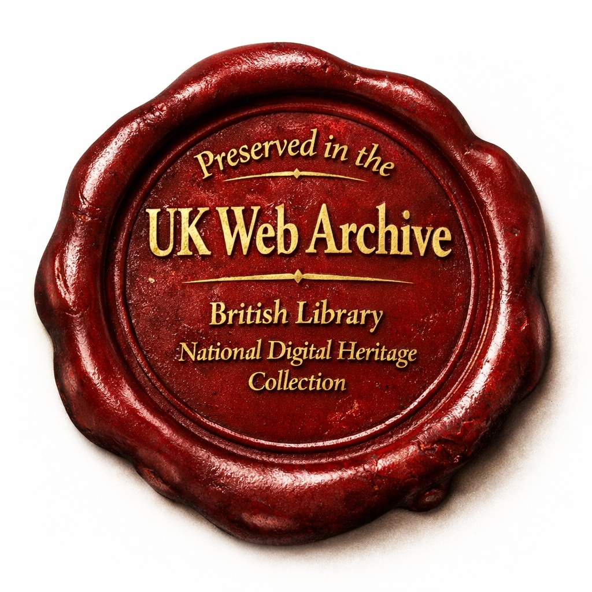
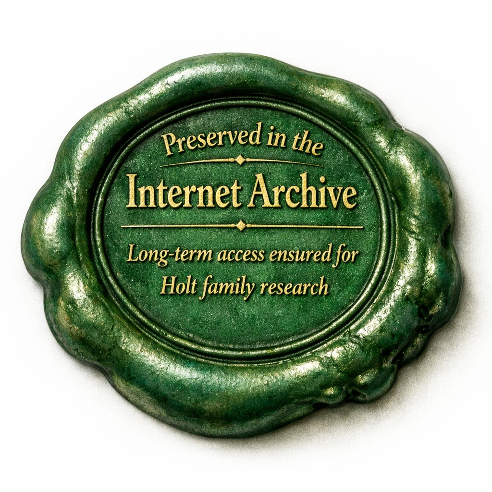
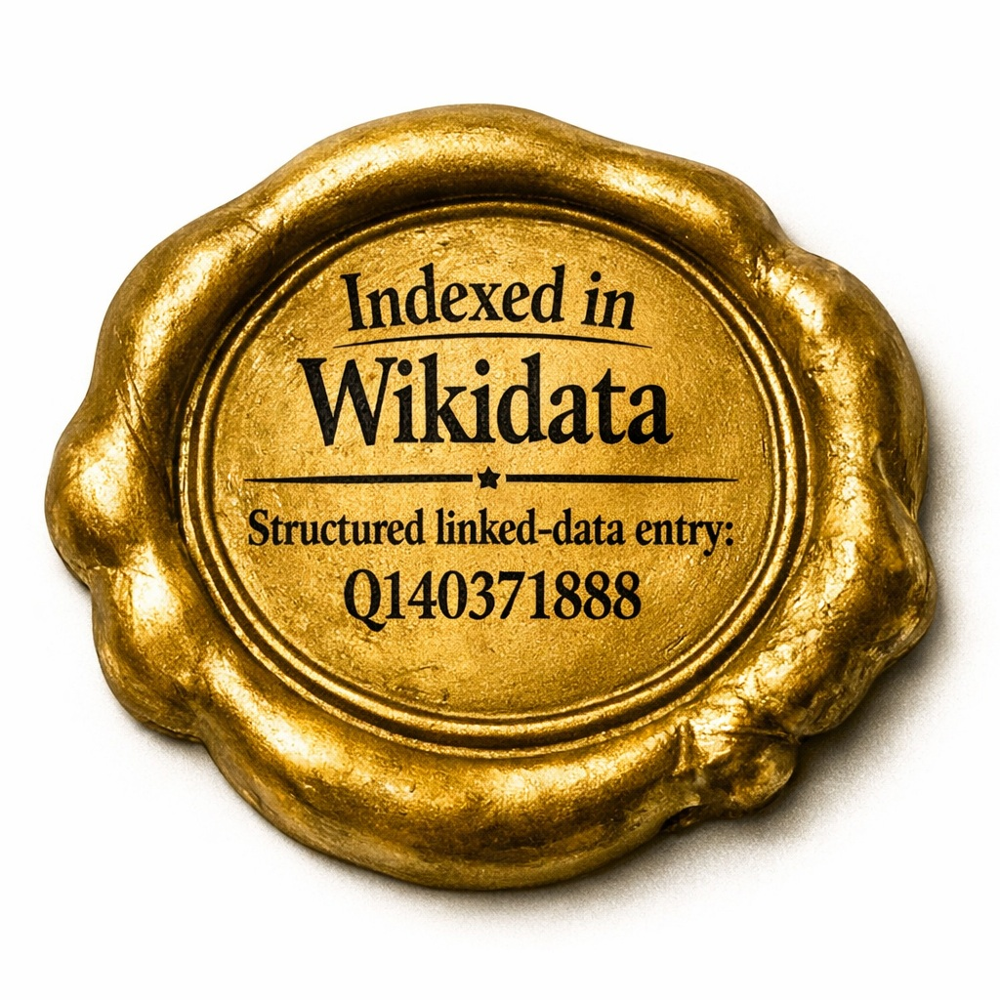

Research Methodology & Sources
This site brings together documentary, genealogical, and historical evidence relating to the Holt family and the wider communities in which they lived. The research follows a clear methodology: identifying primary sources, evaluating their reliability, and cross‑referencing material across archives, published histories, and surviving records. Each section of the site reflects this approach, drawing on evidence that has been assessed for provenance, context, and internal consistency.
The sources listed here represent the core evidence base used throughout HoltAncestry. They include parish registers, manorial documents, wills, inquisitions, heraldic material, early maps, and authoritative secondary works. Together, they form the foundation for the narrative and analytical work presented across the site.
We continually update our source list as new historical records become digitized and available.
Digital Preservation


